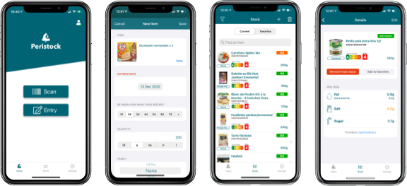

Passionné par l'informatique depuis toujours et fan inconditionnel de la marque pommée depuis 2007, après avoir vendu et dépanné de l'informatique puis assisté les utilisateurs à distance, j'ai choisi en 2014 de m'ouvrir à une nouvelle compétence dans le développement. Après l'obtention de mes deux titres professionnels Analyste Développeur et Développeur Logiciel en 2015 et 2016, j'ai décidé d'allier cette passion à ma nouvelle compétence. Aujourd'hui je vous aide à concrétiser vos idées en applications iPhone/iPad.
Conception et Développement d'applications iOS
Intervenant sur le cursus Concepteur en Développement de Solutions en Mobilité de la CCI IndreAu programme de mon intervention :
Développement en Java sur différents projets dont le répertoire de gestion des carrières unique (RGCU) en prestation pour la CNAV. Détail : http://www.assemblee-nationale.fr/14/projets/pl1376.asp
Conception et Développement d'applications en RPG (AS400) / PHP / JavaScript (Framework ExtJS) pour le compte de PME
Au sein du Centre de Service Clientèle de Tours, j'ai occupé différents postes comme :
J'ai aussi participé activement aux pré-lancements des produits Bbox Fibre (Câble/FTTH) et Bbox Sensation impliquant les tâches suivantes :
Dépannage de clients à domicile ou à distance, maintenance et réparation de PC/Mac, sauvegarde de données, mise en réseau, installation de postes informatiques, assistance aux utilisateurs.
En sous-traitance pour le compte d'Orange, j'ai effectué les dépannages et créations de lignes pour les clients ADSL, ce poste consistait :
Technicien d’Assistance Informatique stagiaire dans le cadre de la préparation au titre du même nom au CEFIM de Joué-Lès-Tours, j'ai participé sur cette période à la rénovation du parc informatique.
Au sein d'une équipe de 3 vendeurs
Paris
Tours
Châteauroux
Tours
Guérêt
Peristock : Application anti gaspillage alimentaire
The Million Tap App : Challenge mobile
InterviewApp : Application d'entretiens vidéos différés
PALO ALTOURS est une startup associative d’entreprises innovantes dans le domaine des technologies numériques. Créée pour promouvoir les start-ups et mutualiser des ressources, l’association a également vocation à diffuser la culture du numérique et favoriser l’émergence de projets individuels ou collectifs en Touraine et plus largement en région Centre. Le soutien à l’innovation est un enjeu fort pour les entreprises et le territoire. Créée afin de promouvoir l’innovation numérique et la mutualisation des ressources entre acteurs de l’écosystème local, l’association PALO ALTOURS a également pour vocation de largement diffuser la culture du numérique et de favoriser l’émergence de projets innovants et stratégiques, qu’ils soient individuels ou collectifs, en Touraine.
Devslopes est une plateforme d'e-learning sur le développement informatique.